Control Flow
Can Python make a decision?
Till now you have learned the Python basics that let you do practical tasks. You can now:
- Store data
- Take input
- Perform calculations
- Display output
For example:
name = input("Enter your name: ")
age = int(input("Enter your age: "))
print("Name:", name)
print("Age:", age)Enter your name: Asha
Enter your age: 22
Name: Asha
Age: 22One important thing is missing. Can Python make a decision? Can it look at a student’s marks and decide whether they passed or failed? That is where control flow and conditional statements come in.
A real problem: the student result program
Suppose you want to build a simple student result program. It should ask the student for their marks and announce the result using this rule:
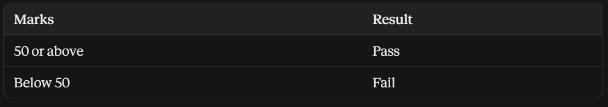
You already have the pieces:
marks = int(input("Enter your marks: ")) # take input
print("Your marks are:", marks) # display output
marks >= 50 # ask: are the marks 50 or more?This asks: “Are the marks greater than or equal to 50?” The comparison asks the question and gives True or False. The problem: how does Python use that answer to actually choose what to do?
How a human solves it
- 1Look at the valueThe marks: 65 or 35.
- 2Ask a yes/no questionAre the marks 50 or more?
- 3Choose an action based on the answerPASS on yes, FAIL on no. → this is exactly what
ifdoes
What is control flow?
Control flow is the order in which a program’s instructions are executed. By default Python runs code line by line, top to bottom. This is sequential flow:
print("Step 1")
print("Step 2")
print("Step 3")The same thing with a cup of chai:
print("Boil water")
print("Add tea leaves")
print("Add milk and sugar")
print("Serve hot")Boil water
Add tea leaves
Add milk and sugar
Serve hotThat works when every instruction must always run. Real problems are rarely that simple: sometimes a line should run only if something is true, or run many times. Control flow statements let a program:
Branch
Choose between different paths: decision making with if / elif / else.
Repeat
Run a block several times: loops with for and while.
Skip or alter
Change the normal order: break, continue, pass.
Types of control flow
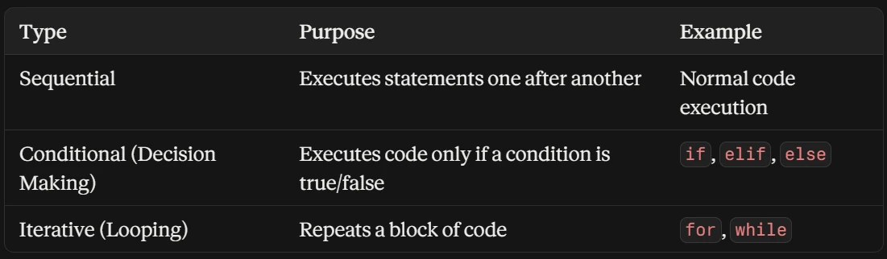
if, elif, else) and iterative (for, while).Inside loops, break, continue and pass then let you leave, skip or hold a place, as you will see later.
Focus: conditional control flow. For the student result problem we need the ability to say:
IF a condition is true → do this
OTHERWISE → do thatVisually:
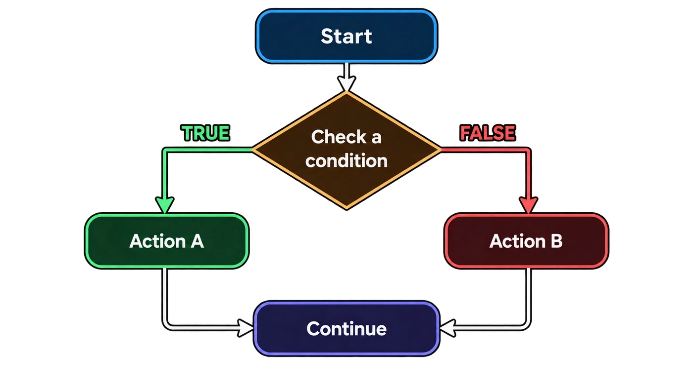
That branching is exactly what a teacher does mentally when checking marks, and it is what Python’s if statement lets you write in code.
The if statement
if runs a block of code only when its condition is True.
if condition:
# code to run if condition is True- The condition must evaluate to
TrueorFalse. - The line ends with a colon
:. - The code inside is indented (normally 4 spaces).
- If the condition is
False, the indented block is simply skipped.
Checking whether a student passed:
marks = int(input("Enter your marks: "))
if marks >= 50:
print("PASS")Output:
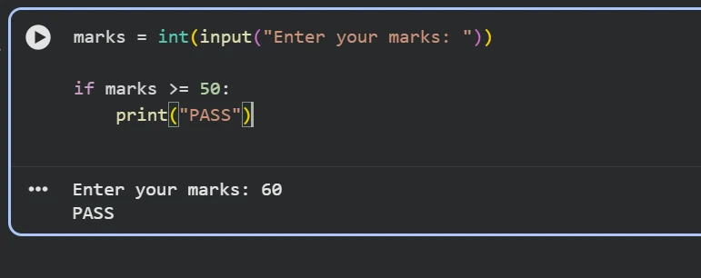
= 50 program; input 60 prints PASS" width="771" height="306">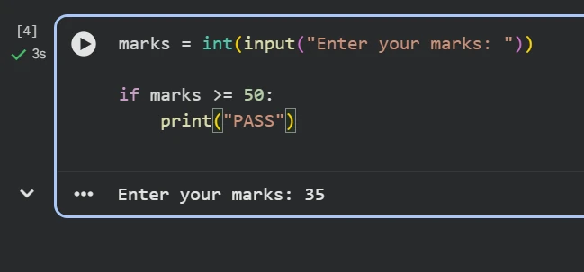
Trace through it:
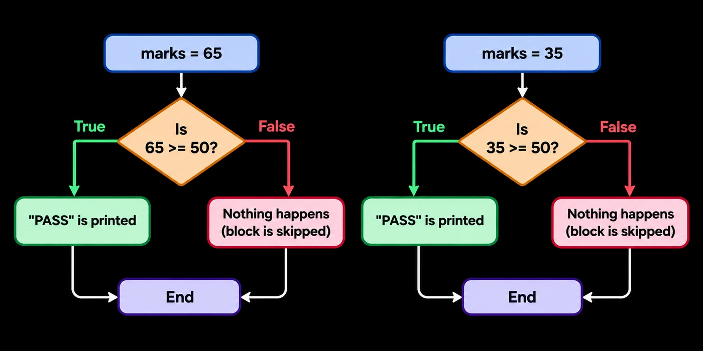
= 50? True, PASS is printed, End. marks = 35: Is 35 >= 50? False, nothing happens (block is skipped), End" width="1400" height="700">| marks | marks >= 50 | What happens | Output |
|---|---|---|---|
| 65 | True | the block runs | PASS |
| 35 | False | the block is skipped | (nothing) |
Another example: may this person vote?
age = int(input("Enter your age: "))
if age >= 18:
print("You can vote")Enter your age: 20
You can voteForget to indent the body and Python refuses to run:
age = int(input("Enter your age: "))
if age >= 18:
print("You can vote")IndentationError: expected an indented block after 'if' statement on line 3The if…else statement
With only if, marks of 35 print nothing at all. Python correctly skips “PASS” but never tells us the student failed:
marks = 35
if marks >= 50:
print("PASS")
# No output, but we wanted "FAIL" to show!We need: IF the condition is true → do this; OTHERWISE → do something else. That is else.
if condition:
# runs when condition is True
else:
# runs when condition is Falseelsehas no condition of its own; it catches whatever theifdidn’t.elsemust line up with its matchingif(same indentation).- Exactly one of the two blocks runs: never both, never neither.
marks = int(input("Enter your marks: "))
if marks >= 50:
print("PASS")
else:
print("FAIL")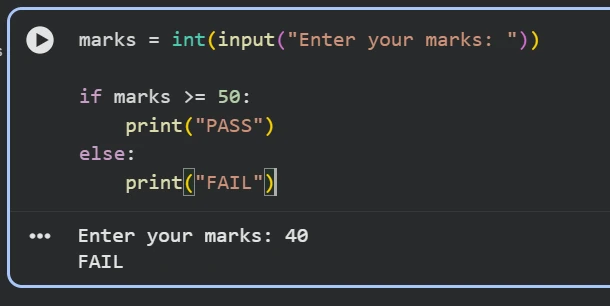
else block runs.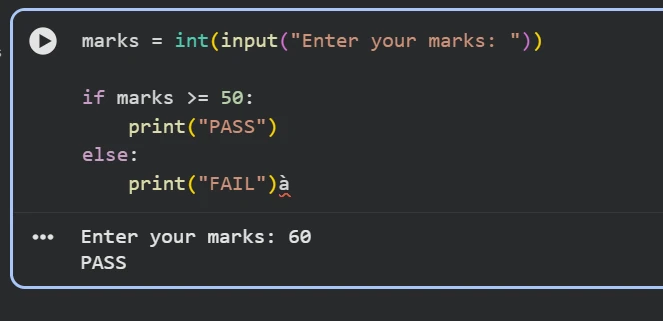
if block runs.Flow diagram:
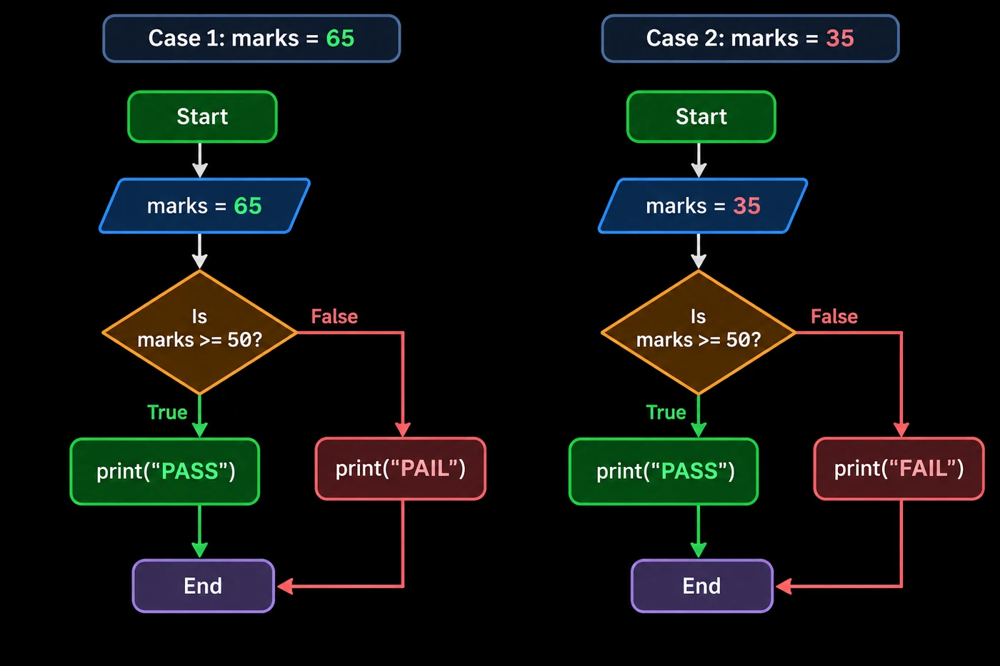
= 50? True, print PASS, End. Case 2, marks = 35: Start, marks = 35, Is marks >= 50? False, print FAIL, End" width="1400" height="933">print("FAIL").)More two-way decisions:
temperature = int(input("Enter temperature: "))
if temperature > 30:
print("It is hot")
else:
print("It is cool")Enter temperature: 34
It is hotA login screen comparing the entered password with the saved one:
saved_password = "abc123"
entered_password = input("Enter password: ")
if entered_password == saved_password:
print("Login successful")
else:
print("Incorrect password")Enter password: abc124
Incorrect passwordif…else shape is the same, though, and you’ll see it in every auth check you debug.More than two outcomes: if…elif…else
Pass/Fail has two outcomes. What about grades A, B, C, D, F? if…else can only split two ways. For several conditions in sequence, use elif (short for “else if”).
if condition1:
# runs if condition1 is True
elif condition2:
# runs if condition1 is False AND condition2 is True
elif condition3:
# runs if condition1 and condition2 are False AND condition3 is True
else:
# runs if none of the above are True- Python checks the conditions in order, top to bottom.
- The first condition that is True runs; the rest are skipped, even if they would also be True.
- You can have as many
elifblocks as you need. - The final
elseis optional but good practice: it catches “everything else”.
A grading system
Instead of Pass/Fail, assign a grade based on marks:
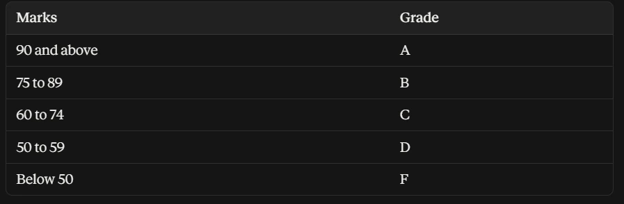
marks = int(input("Enter your marks: "))
if marks >= 90:
print("Grade: A")
elif marks >= 75:
print("Grade: B")
elif marks >= 60:
print("Grade: C")
elif marks >= 50:
print("Grade: D")
else:
print("Grade: F")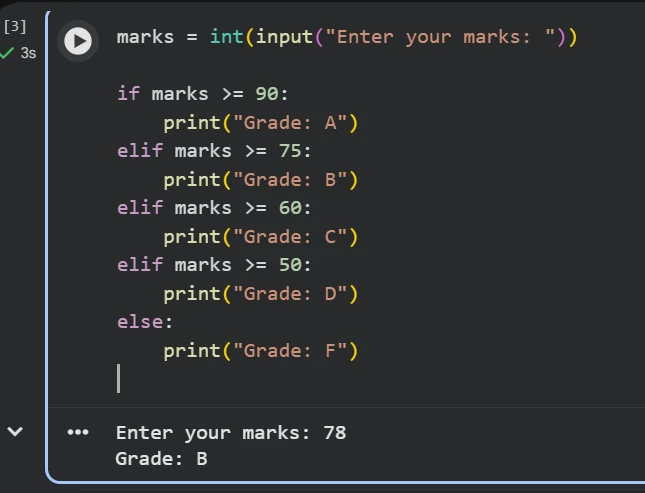
>= 90, passes >= 75: Grade B.Flow diagram:
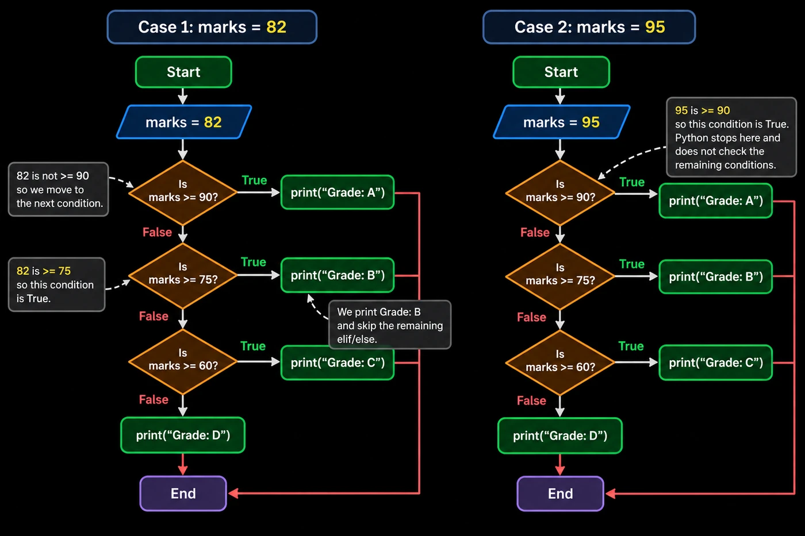
= 90 so move to the next condition; 82 is >= 75 so this condition is True; print Grade: B and skip the remaining elif/else. Case 2, marks = 95: 95 is >= 90, so this condition is True; Python stops there and does not check the remaining conditions" width="1400" height="933">marks >= 50 came first, a 95 would get “D” and never reach the A check.A traffic light:
light = input("Enter light colour: ")
if light == "red":
print("Stop")
elif light == "yellow":
print("Get ready")
elif light == "green":
print("Go")
else:
print("Invalid colour")Enter light colour: yellow
Get readyDelivery charges by order amount: ₹2000 or more is free, ₹1000–₹1999 costs ₹50, anything smaller costs ₹100:
amount = int(input("Enter order amount: "))
if amount >= 2000:
print("Free delivery")
elif amount >= 1000:
print("Delivery charge: ₹50")
else:
print("Delivery charge: ₹100")Enter order amount: 1450
Delivery charge: ₹50Combining conditions with and, or, not
Sometimes a decision depends on several conditions at once: “A student passes only if marks are 50 or above AND attendance is at least 75%.” One comparison can’t capture that, so you combine them with the logical operators from Part 2.
and: both must be True
condition1 and condition2The result is True only if both are True. Problem: a student passes only if marks ≥ 50 and attendance ≥ 75%.
marks = int(input("Enter your marks: "))
attendance = int(input("Enter your attendance %: "))
if marks >= 50 and attendance >= 75:
print("PASS")
else:
print("FAIL")Enter your marks: 65
Enter your attendance %: 80
PASSTrace (marks = 65, attendance = 80, and a second run with attendance = 60):
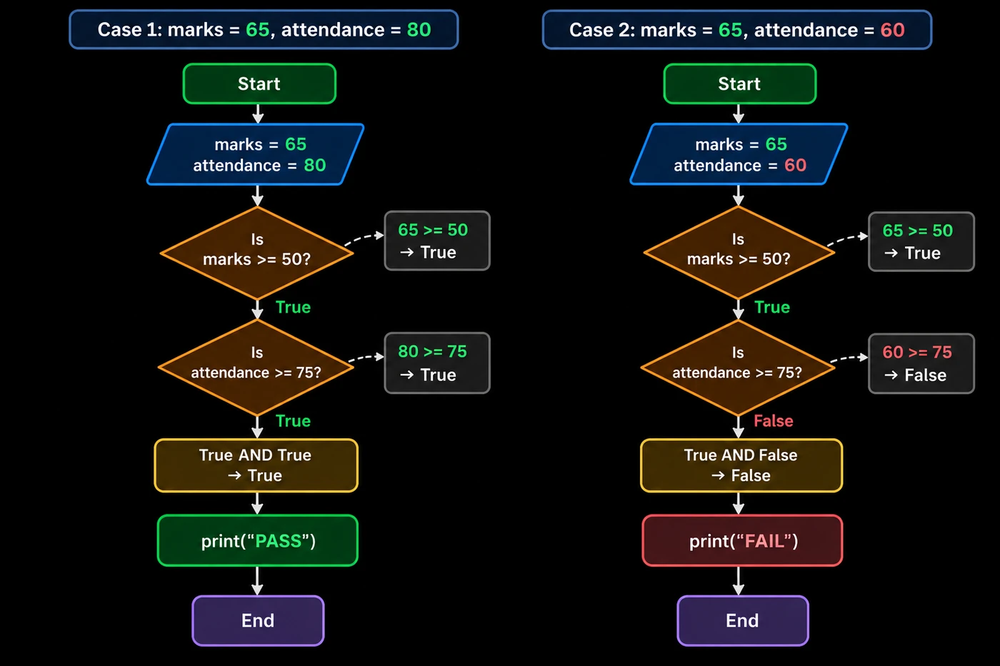
= 50 True, 80 >= 75 True, True AND True gives True, print PASS. Case 2, marks 65 attendance 60: 65 >= 50 True, 60 >= 75 False, True AND False gives False, print FAIL" width="1400" height="933">and needs both: one False (attendance 60) is enough to FAIL.Entry to a movie hall needs age 18+ and a ticket; a bank loan needs salary ≥ 25000 and credit score ≥ 700:
age = int(input("Enter your age: "))
has_ticket = input("Do you have a ticket? (yes/no): ")
if age >= 18 and has_ticket == "yes":
print("Enter the hall")
else:
print("Entry not allowed")Enter your age: 20
Do you have a ticket? (yes/no): no
Entry not allowedsalary = int(input("Enter monthly salary: "))
credit_score = int(input("Enter credit score: "))
if salary >= 25000 and credit_score >= 700:
print("Loan approved")
else:
print("Loan rejected")Enter monthly salary: 32000
Enter credit score: 680
Loan rejectedor: at least one must be True
condition1 or condition2The result is True if at least one condition is True.
A scholarship goes to students with marks ≥ 90 or who are sports champions:
marks = int(input("Enter your marks: "))
is_sports_champion = input("Sports champion? (yes/no): ")
if marks >= 90 or is_sports_champion == "yes":
print("Scholarship Awarded")
else:
print("Not Eligible")Enter your marks: 60
Sports champion? (yes/no): yes
Scholarship AwardedTrace (marks = 60, champion = "yes"):
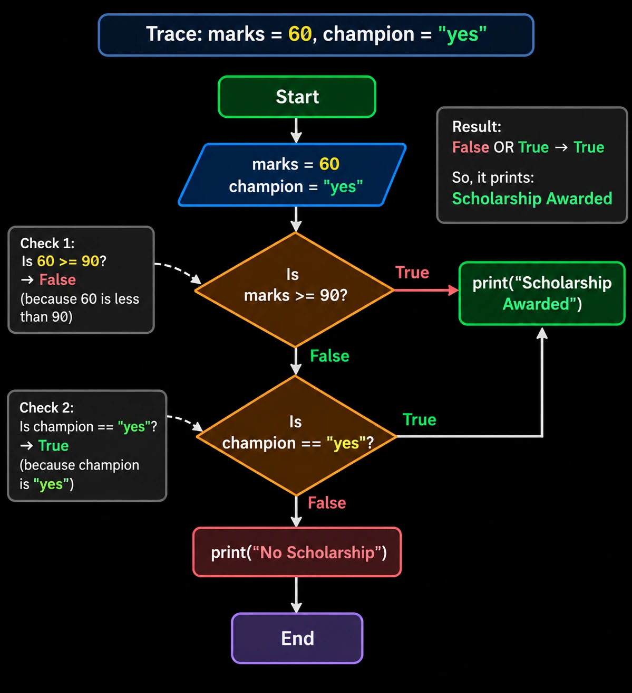
= 90? False; Check 2, is champion == yes? True; result False OR True gives True, so it prints Scholarship Awarded" width="1199" height="1312">Not Eligible.)day = input("Enter the day: ")
if day == "Saturday" or day == "Sunday":
print("Office is closed")
else:
print("Office is open")Enter the day: Sunday
Office is closedamount = int(input("Enter order amount: "))
is_premium = input("Premium member? (yes/no): ")
if amount >= 500 or is_premium == "yes":
print("Free delivery")
else:
print("Delivery charge: Rs 40")Enter order amount: 350
Premium member? (yes/no): no
Delivery charge: Rs 40if day == "Saturday" or "Sunday": is always True, because the non-empty string "Sunday" is truthy on its own. Repeat the comparison on both sides: day == "Saturday" or day == "Sunday".not: reverse a condition
not conditionIt flips True to False, and False to True.
is_failed = False
if not is_failed:
print("Student has passed")
is_raining = False
if not is_raining:
print("Let's go for a walk")
is_logged_in = False
if not is_logged_in:
print("Please log in to continue")Student has passed
Let's go for a walk
Please log in to continueIn each case not False becomes True, so the message prints.
Nested conditions: a decision inside a decision
A nested if is an if placed inside another if (or else) block. Use it when one decision only makes sense after another has been checked.
if condition1:
if condition2:
# runs only if BOTH condition1 and condition2 are True
else:
# runs if condition1 is True but condition2 is False
else:
# runs if condition1 is FalseKey idea: the inner if is only ever checked if the outer condition already passed. It is a decision within a decision.
Pass/Fail with a distinction
Extend the student result problem:
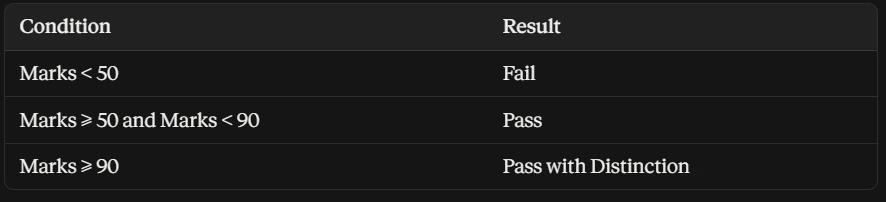
marks = int(input("Enter your marks: "))
if marks >= 50:
if marks >= 90:
print("PASS with Distinction")
else:
print("PASS")
else:
print("FAIL")Enter your marks: 95
PASS with DistinctionTracing through it:
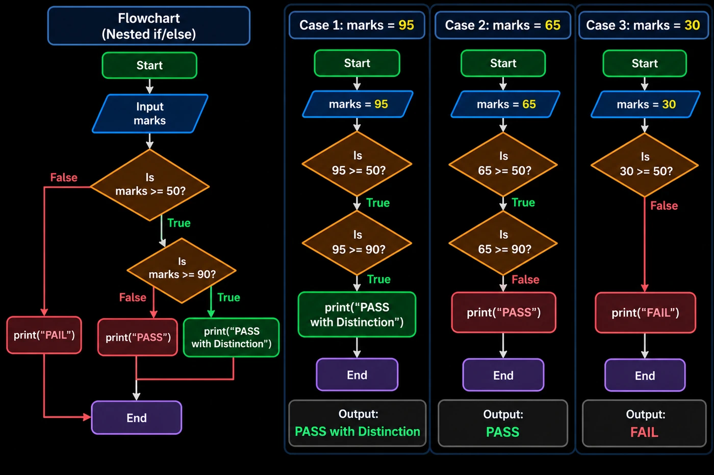
= 50 True and 95 >= 90 True, output PASS with Distinction; marks 65 gives True then False, output PASS; marks 30 gives 30 >= 50 False, output FAIL" width="1400" height="933">if: 95, 65 and 30.| marks | Outer: >= 50? | Inner: >= 90? | Output |
|---|---|---|---|
| 95 | True | True | PASS with Distinction |
| 65 | True | False | PASS |
| 30 | False | never checked | FAIL |
When marks are 30, the inner condition is never evaluated: it lives inside the outer block, and the outer condition already failed.
An online shop checks stock first, and only then whether the customer can afford the ₹500 item:
stock = 10
money = int(input("Enter your money: "))
if stock > 0:
if money >= 500:
print("Order placed")
else:
print("Not enough money")
else:
print("Out of stock")Enter your money: 300
Not enough moneyAn ATM checks the PIN first, and asks for an amount only if the PIN is right:
correct_pin = 1234
balance = 5000
pin = int(input("Enter PIN: "))
if pin == correct_pin:
amount = int(input("Enter amount to withdraw: "))
if amount <= balance:
print("Collect your cash")
else:
print("Insufficient balance")
else:
print("Wrong PIN")Enter PIN: 1234
Enter amount to withdraw: 7000
Insufficient balanceand or an elif ladder is usually clearer.Indentation decides what belongs where
In every if, elif and else so far, some lines were pushed right. Many languages use curly braces { } to mark a block; Python uses indentation. Get it wrong and either the program won’t run, or it runs but gives the wrong result.
All lines indented by the same amount directly under a line ending in : form one block. The block ends at the first line that moves back left.
if condition:
# this line is inside the if block
# this line is also inside the if block
# this line is outside: it always runs- A line ending with
:must be followed by at least one indented line. - Every line in the same block uses exactly the same indentation.
- The standard is 4 spaces per level.
- The block ends at the first line that moves back to the left.
elifandelsesit at the same level as their matchingif.
Indentation in if…else
Print PASS or FAIL, a message that belongs only to that result, and a final line that always prints:
marks = 35
if marks >= 50:
print("PASS")
print("Well done!")
else:
print("FAIL")
print("Better luck next time!")
print("Result checked")FAIL
Better luck next time!
Result checkedif marks >= 50: -> level 0 (not indented)
····print("PASS") -> level 1, inside if
····print("Well done!") -> level 1, inside if
else: -> level 0, same as if
····print("FAIL") -> level 1, inside else
····print("Better luck...") -> level 1, inside else
print("Result checked") -> level 0, outside both, always runsWith marks = 35 the whole if block (both lines) is skipped, the else block runs, and the last line runs no matter what.
Same code, different indentation, different result
Goal: congratulate only students who pass.
marks = 35
if marks >= 50:
print("PASS")
print("Congratulations!")Congratulations!marks = 35
if marks >= 50:
print("PASS")
print("Congratulations!")(no output)Nested indentation
Each new level adds 4 more spaces:
marks = 95
if marks >= 50:
if marks >= 90:
print("PASS with Distinction")
else:
print("PASS")
else:
print("FAIL")PASS with Distinctionif marks >= 50: -> 0 spaces (level 0)
····if marks >= 90: -> 4 spaces (level 1)
········print("PASS with Distinction") -> 8 spaces (level 2)
····else: -> 4 spaces, pairs with inner if
········print("PASS") -> 8 spaces (level 2)
else: -> 0 spaces, pairs with outer if
····print("FAIL") -> 4 spaces (level 1)The indentation of each else tells Python which if it belongs to: the inner else lines up with the inner if, the outer with the outer.
for loops: once for each item
Greeting 100 students or printing every item of a list with separate print() lines isn’t practical and doesn’t scale. A loop repeats an action automatically.
for item in sequence:
# code to run for each itemitemis a new variable, created automatically, holding the current value on each round.sequencecan be a list, string, tuple, arange()of numbers, or any other iterable.- The line ends with a colon and the block is indented, the same rule as
if. - The loop runs once per item, then stops automatically when the sequence ends.
Repeating a task for each item: iterating over lists, strings and other sequences
fruits = ["apple", "banana", "cherry"]
for fruit in fruits:
print(fruit)apple
banana
cherry- 1Round 1
fruit = "apple"→ print(apple) - 2Round 2
fruit = "banana"→ print(banana) - 3Round 3
fruit = "cherry"→ print(cherry) - ✓Sequence exhaustedThe loop ends automatically.
Totalling a shopping cart:
prices = [250, 120, 80]
total = 0
for price in prices:
total = total + price
print("Total bill:", total)Total bill: 450Notice print is not indented, so it runs once, after the loop. Indent it and you’d print a running total three times.
Looping over a string
A string is a sequence of characters, so you loop over it the same way:
for letter in "Python":
print(letter)P
y
t
h
o
nfor letter in "Code":
print(letter)C
o
d
efor digit in "4821": # an OTP, one digit at a time
print(digit)4
8
2
1The loop variable
The variable in for item in sequence (here fruit or letter) is the loop variable. You don’t create it beforehand; Python makes it and updates it each round. After the loop ends it still holds the last value:
fruits = ["apple", "banana", "cherry"]
for fruit in fruits:
pass
print("after loop:", fruit)after loop: cherryNested for loops
A small multiplication table, one loop inside another:
for i in range(1, 4):
for j in range(1, 4):
print(i, "x", j, "=", i*j)1 x 1 = 1
1 x 2 = 2
1 x 3 = 3
2 x 1 = 2
2 x 2 = 4
2 x 3 = 6
3 x 1 = 3
3 x 2 = 6
3 x 3 = 9For every single value of the outer loop, the inner loop runs from start to finish before the outer loop moves on.
for day in ["Mon", "Tue"]:
for meal in ["Lunch", "Dinner"]:
print(day, meal)Mon Lunch
Mon Dinner
Tue Lunch
Tue Dinnerfor floor in [1, 2]: # a hotel
for room in [1, 2, 3]:
print("Floor", floor, "Room", room)Floor 1 Room 1
Floor 1 Room 2
Floor 1 Room 3
Floor 2 Room 1
Floor 2 Room 2
Floor 2 Room 3while loops: repeat as long as a condition holds
A for loop is perfect when you know how many times to repeat, or you’re walking through a sequence. Sometimes you don’t know in advance; you just want to keep going until a condition becomes False. That is a while loop: it loops on a condition, not over items.
Print the numbers 1 to 5:
count = 1
while count <= 5:
print(count)
count = count + 11
2
3
4
5| count | count <= 5? | Action |
|---|---|---|
| 1 | True | print 1, count becomes 2 |
| 2 | True | print 2, count becomes 3 |
| 3 | True | print 3, count becomes 4 |
| 4 | True | print 4, count becomes 5 |
| 5 | True | print 5, count becomes 6 |
| 6 | False | loop stops |
- The condition is checked before every iteration.
- While it is True, the indented block keeps running.
- The loop stops as soon as the condition is False at a check.
- Unlike
for, Python does not move to a next value for you. You must update the condition yourself inside the loop.
Counting down
count = 5
while count >= 1:
print(count)
count = count - 1
print("Liftoff!")5
4
3
2
1
Liftoff!seconds = 5 # microwave timer
while seconds >= 1:
print(seconds)
seconds = seconds - 1
print("Beep! Food is ready")5
4
3
2
1
Beep! Food is readyAvoiding infinite loops
An infinite loop happens when the condition never becomes False, one of the most common while mistakes:
count = 1
while count <= 5:
print(count)
# forgot to update count!count stays 1, count <= 5 stays True, and 1 is printed forever (stop it with Ctrl + C). The fix: make sure the body always moves the condition toward False.
# WRONG - infinite loop (seconds never changes)
# seconds = 5
# while seconds >= 1:
# print(seconds)
# CORRECT - update the variable inside the loop
seconds = 5
while seconds >= 1:
print(seconds)
seconds = seconds - 1Nested while loops
A 3-by-3 grid of stars:
row = 1
while row <= 3:
col = 1
while col <= 3:
print("*", end=" ")
col = col + 1
print()
row = row + 1* * *
* * *
* * *For every row (outer loop), the inner loop runs across all 3 columns; then print() ends the line. Note that col = 1 is reset at the start of each row. The same pattern prints a cinema hall’s seats (O = empty seat) and a 3-floor parking lot:
row = 1
while row <= 3:
seat = 1
while seat <= 4:
print("O", end=" ")
seat = seat + 1
print()
row = row + 1O O O O
O O O O
O O O Ofloor = 1
while floor <= 3:
slot = 1
while slot <= 4:
print("Floor", floor, "Slot", slot)
slot = slot + 1
floor = floor + 1Floor 1 Slot 1
Floor 1 Slot 2
Floor 1 Slot 3
Floor 1 Slot 4
Floor 2 Slot 1
Floor 2 Slot 2
Floor 2 Slot 3
Floor 2 Slot 4
Floor 3 Slot 1
Floor 3 Slot 2
Floor 3 Slot 3
Floor 3 Slot 4break and continue
Normally a loop runs until its condition is False (while) or its sequence is used up (for). Sometimes you want to leave early, or skip one round without stopping the whole loop.
break · stop the loop
Exits the loop immediately. No further rounds run, even if items remain or the condition is still True.
continue · skip this round
Abandons the rest of the current round and jumps straight to the next one. The loop keeps going.
break in a for loop
Stop searching the moment the target is found:
numbers = [4, 9, 15, 22, 7]
target = 15
for num in numbers:
if num == target:
print("Found it!")
breakFound it!Once num is 15, break runs and Python never even looks at 22 or 7. Here it is with a progress message, searching a shopping basket for milk:
basket = ["bread", "eggs", "milk", "butter", "jam"]
for item in basket:
if item == "milk":
print("Milk found!")
break
print("Checking:", item)Checking: bread
Checking: eggs
Milk found!break in a while loop
while True would run forever; break is the way out once a condition inside is met:
while True:
word = input("Type 'exit' to stop: ")
if word == "exit":
print("Bye!")
break
print("You typed:", word)Type 'exit' to stop: hello
You typed: hello
Type 'exit' to stop: python
You typed: python
Type 'exit' to stop: exit
Bye!An ATM that keeps asking until the right PIN is entered:
while True:
pin = input("Enter PIN: ")
if pin == "1234":
print("PIN accepted")
break
print("Wrong PIN, try again")Enter PIN: 1111
Wrong PIN, try again
Enter PIN: 1234
PIN acceptedcontinue in a for loop
Print only the odd numbers from 1 to 5:
for num in range(1, 6):
if num % 2 == 0:
continue
print(num)1
3
5| num | num % 2 == 0? | Action |
|---|---|---|
| 1 | False | print 1 |
| 2 | True | continue: print skipped |
| 3 | False | print 3 |
| 4 | True | continue: print skipped |
| 5 | False | print 5 |
for num in range(1, 6): # skip 3
if num == 3:
continue
print(num)1
2
4
5tickets = ["Confirmed", "Cancelled", "Confirmed"]
for status in tickets:
if status == "Cancelled":
continue
print("Boarding pass issued")Boarding pass issued
Boarding pass issuedcontinue in a while loop
count = 0
while count < 5:
count = count + 1
if count == 3:
continue
print(count)1
2
4
5day = 0 # Day 3 is a holiday
while day < 5:
day = day + 1
if day == 3:
continue
print("Office open on Day", day)Office open on Day 1
Office open on Day 2
Office open on Day 4
Office open on Day 5while loop, count = count + 1 sits before the continue check. Put it after, and when count hits 3 the update is skipped every time: an infinite loop.pass: a placeholder that does nothing
Sometimes you want to write the shape of an if, loop, function or class before deciding what goes inside. Python doesn’t allow an empty block, and a comment alone doesn’t count:
if marks >= 50:
# nothing hereIndentationError: expected an indented block after 'if' statement on line 1pass is a statement that does absolutely nothing but keeps the block valid:
if marks >= 50:
passIn conditional statements
marks = 40
if marks >= 50:
pass # TODO: add pass logic later
else:
print("FAIL")FAILYou can build the FAIL case now and leave PASS as a placeholder. Two more:
temperature = 25
if temperature > 35:
pass # TODO: add "too hot" logic later
else:
print("Weather is fine")
payment_mode = "Cash" # payment app still under development
if payment_mode == "UPI":
pass # TODO: add UPI payment logic later
else:
print("Pay by cash at delivery")Weather is fine
Pay by cash at deliveryIn loops, functions and classes
for num in range(10):
pass # loop structure ready, logic to be added later
fruits = ["apple", "banana", "cherry"]
for fruit in fruits:
pass # logic to be added later
def calculate_grade(marks):
pass
class Student:
passThis is common while sketching a program: define every function and class first, fill in the logic later, and Python never complains about empty bodies in between. (Functions and classes have their own notes later in this module.)
pass vs continue
pass | continue | |
|---|---|---|
| Meaning | “do nothing here”; a placeholder | “skip the rest of this round” |
| Effect | execution carries on normally with the next line | jumps to the next iteration of the loop |
| Where it works | anywhere a statement is required: if, loops, functions, classes | only inside a loop |
range(): a sequence of numbers
To repeat something a fixed number of times, or walk through numbers, you don’t type them all out. range() generates them, and it is almost always used with a for loop.
| Form | Generates | Example | Numbers |
|---|---|---|---|
range(stop) | 0 up to, not including, stop | range(5) | 0, 1, 2, 3, 4 |
range(start, stop) | start up to, not including, stop | range(2, 6) | 2, 3, 4, 5 |
range(start, stop, step) | jumps by step each time | range(0, 10, 2) | 0, 2, 4, 6, 8 |
| negative step | counts down | range(10, 0, -1) | 10, 9, … , 1 |
range(stop)
for i in range(5):
print(i)0
1
2
3
4for i in range(3):
print("Hello")
for i in range(3): # a payment reminder, 3 times
print("Reminder", i)Hello
Hello
Hello
Reminder 0
Reminder 1
Reminder 2range(start, stop)
for i in range(2, 6):
print(i)2
3
4
5for token in range(1, 6): # bank tokens 1 to 5
print("Token number", token)Token number 1
Token number 2
Token number 3
Token number 4
Token number 5To print 1 to 5 you write range(1, 6): the stop has to be one past the last number you want.
range(start, stop, step)
for i in range(0, 10, 2):
print(i)
for i in range(2, 11, 2): # even numbers 2 to 10
print(i)0
2
4
6
8
2
4
6
8
10for km in range(0, 11, 2): # a bus stop every 2 km
print("Bus stop at km", km)Bus stop at km 0
Bus stop at km 2
Bus stop at km 4
Bus stop at km 6
Bus stop at km 8
Bus stop at km 10Positive and negative steps
A positive step counts upward; a negative step counts downward.
for i in range(10, 0, -1):
print(i)10
9
8
7
6
5
4
3
2
1for i in range(5, 0, -1):
print(i)
print("Happy New Year!")
for floor in range(5, 0, -1): # a lift going down
print("Floor", floor)
print("Ground exit reached")5
4
3
2
1
Happy New Year!
Floor 5
Floor 4
Floor 3
Floor 2
Floor 1
Ground exit reachedrange() mistake. range(5) → 0, 1, 2, 3, 4 (5 excluded); range(2, 6) → 2, 3, 4, 5 (6 excluded). Memory trick: range(n) always produces exactly n numbers, starting at 0.enumerate(): index and value together
Why indexes are needed, and basic enumerate() usage
Looping with for fruit in fruits gives you each value but loses its position. To print “1. apple”, “2. banana”, you need both. enumerate() gives you both at once.
fruits = ["apple", "banana", "cherry"]
for index, fruit in enumerate(fruits):
print(index, fruit)0 apple
1 banana
2 cherry- 1Round 1
index = 0, fruit = "apple"→ 0 apple - 2Round 2
index = 1, fruit = "banana"→ 1 banana - 3Round 3
index = 2, fruit = "cherry"→ 2 cherry
For each item, enumerate() produces a pair (index, value). Writing for index, fruit in … unpacks each pair into two variables in one step, so you never keep a separate counter by hand.
print(list(enumerate(fruits)))[(0, 'apple'), (1, 'banana'), (2, 'cherry')]A support system listing tickets with their position:
tickets = ["Login problem", "Payment failed", "Password reset"]
for index, ticket in enumerate(tickets):
print(index, ticket)0 Login problem
1 Payment failed
2 Password resetA custom starting number: enumerate(iterable, start)
Counting starts at 0 by default. Pass start to change it:
fruits = ["apple", "banana", "cherry"]
for index, fruit in enumerate(fruits, start=1):
print(index, fruit)1 apple
2 banana
3 cherrystudents = ["Rahul", "Priya", "Amit", "Sneha"]
for roll_no, name in enumerate(students, start=1):
print("Roll No:", roll_no, "-", name)Roll No: 1 - Rahul
Roll No: 2 - Priya
Roll No: 3 - Amit
Roll No: 4 - SnehaWith strings and other iterables
enumerate() works with any iterable, including strings:
for index, letter in enumerate("abc"):
print(index, letter)
for index, letter in enumerate("cat"):
print(index, letter)0 a
1 b
2 c
0 c
1 a
2 tpassword = "Secure123" # check each character's position
for position, character in enumerate(password):
print(position, character)0 S
1 e
2 c
3 u
4 r
5 e
6 1
7 2
8 3for line_no, row in enumerate(rows, start=1) lets your error messages say “bad value on line 47”, which saves everyone a lot of hunting.Key terms
- Control flow
- The order in which a program’s statements are executed; sequential by default, changed by conditions, loops and jump statements.
- Condition
- An expression that evaluates to True or False and decides whether a block runs.
- if statement
- Runs its indented block only when its condition is True; otherwise the block is skipped.
- else
- The catch-all branch of an if, with no condition of its own, that runs when the if (and any elif) conditions are all False.
- elif
- “Else if”: an extra condition checked only when every condition above it was False; the first True branch wins.
- Nested if
- An if statement inside another if or else block, checked only after the outer condition has passed.
- Block
- A group of consecutive lines with the same indentation under a line ending in a colon.
- for loop
- Repeats its block once for each item of a sequence or iterable, then stops automatically.
- Loop variable
- The variable in
for x in seqthat Python sets to the next item on every round; it keeps the last value after the loop. - while loop
- Repeats its block as long as its condition stays True, checking the condition before every round.
- Infinite loop
- A loop whose condition never becomes False, usually because the body forgets to update the variable it depends on.
- break
- Immediately exits the innermost loop; no further iterations run.
- continue
- Skips the rest of the current iteration and moves on to the next one.
- pass
- A statement that does nothing, used as a placeholder where Python requires a block.
- range()
- Generates a sequence of integers from start up to but not including stop, moving by step.
- enumerate()
- Wraps an iterable so each round yields an (index, value) pair, counting from 0 or a chosen start.
Self-check
Pick an answer. You’ll see right away whether it’s correct and why.
With marks = 95, what does the grading ladder print if the first condition is marks >= 50 (D) and marks >= 90 (A) comes later?
- Grade: A
- Grade: D
- Both A and D
- Nothing
Only the first True branch runs. 95 >= 50 is True, so it prints D and never checks the rest. Put the strictest test first.
How many numbers does range(3, 8) produce?
- 8
- 6
- 3
- 5
3, 4, 5, 6, 7: stop (8) is excluded, so 8 − 3 = 5 numbers.
What does this print? for n in range(1, 6): / if n == 4: break / print(n)
- 1 2 3
- 1 2 3 5
- 1 2 3 4
- 4
break exits the loop the moment n is 4, before it is printed, so 5 is never reached either.
Same loop, but with continue instead of break. What prints?
- 1 2 3
- 4
- 1 2 3 5
- 1 2 3 4 5
continue skips only the round where n is 4; the loop carries on to 5.
Why might count = 1 / while count <= 5: / print(count) never stop?
whileneeds arange()- count is never updated, so the condition stays True
- print() blocks the loop
- 5 is excluded
A while loop only re-checks its condition; the body must change count or it loops forever.
marks = 35; if marks >= 50: print("PASS"), and on the next line, not indented, print("Well done"). What prints?
- PASS and Well done
- Nothing
- Well done
- An IndentationError
The unindented line is outside the if block, so it always runs. Valid code, wrong meaning.
What does for i, ch in enumerate("hi", start=1): print(i, ch) print?
1 hthen2 i0 hthen1 ih 1theni 2- An error
enumerate yields (index, value) pairs and start=1 makes counting begin at 1.
Which statement is allowed outside a loop?
breakcontinue- Both
pass
pass works anywhere a statement is needed. break and continue only make sense inside loops.
A student passes only if marks ≥ 50 and attendance ≥ 75. Marks 80, attendance 60. Result?
- PASS
- FAIL
- Error
- Depends on the order of the conditions
True and False is False, so the else branch (FAIL) runs.
All of it, in one sentence
if / elif / else let a program choose one path based on True/False conditions (combined with and, or, not and nested when one decision depends on another), indentation decides which lines belong to each block, and for (over items) and while (on a condition) repeat work, steered by break, continue, pass, range() and enumerate().
— Vishwa Mohan